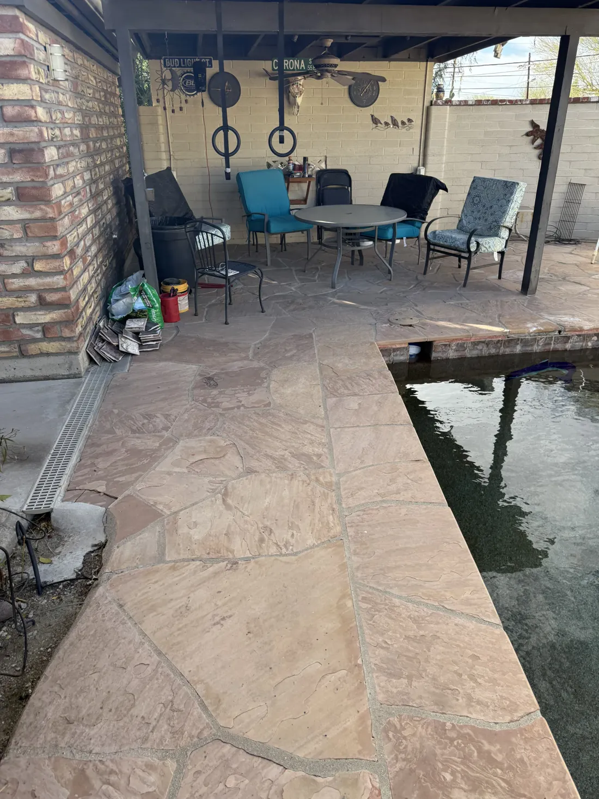
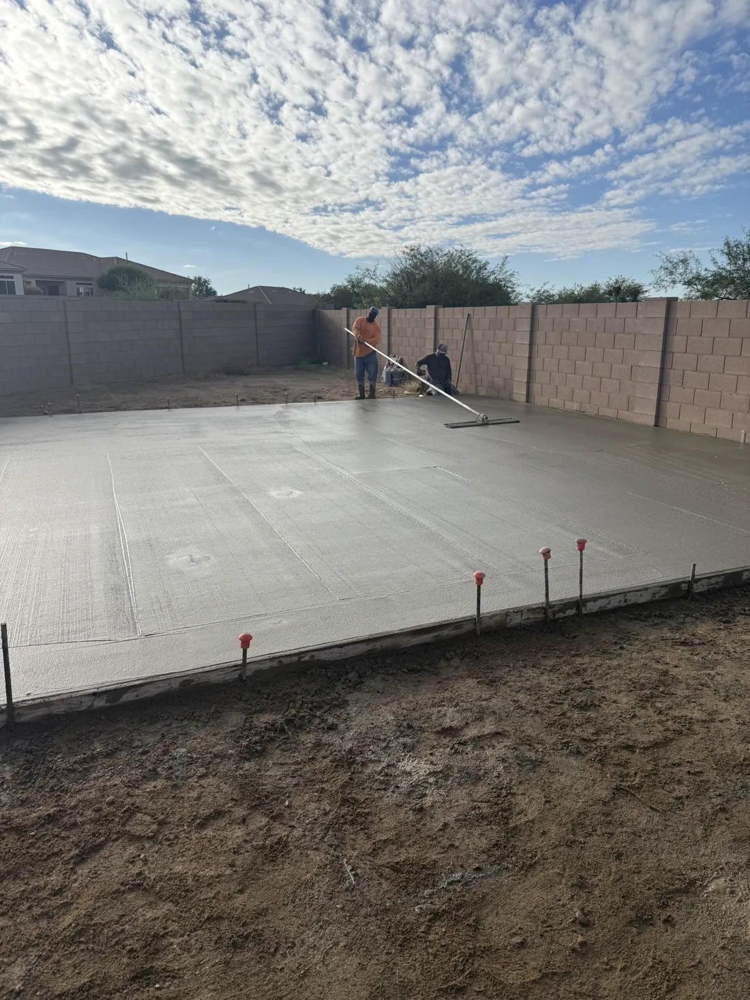
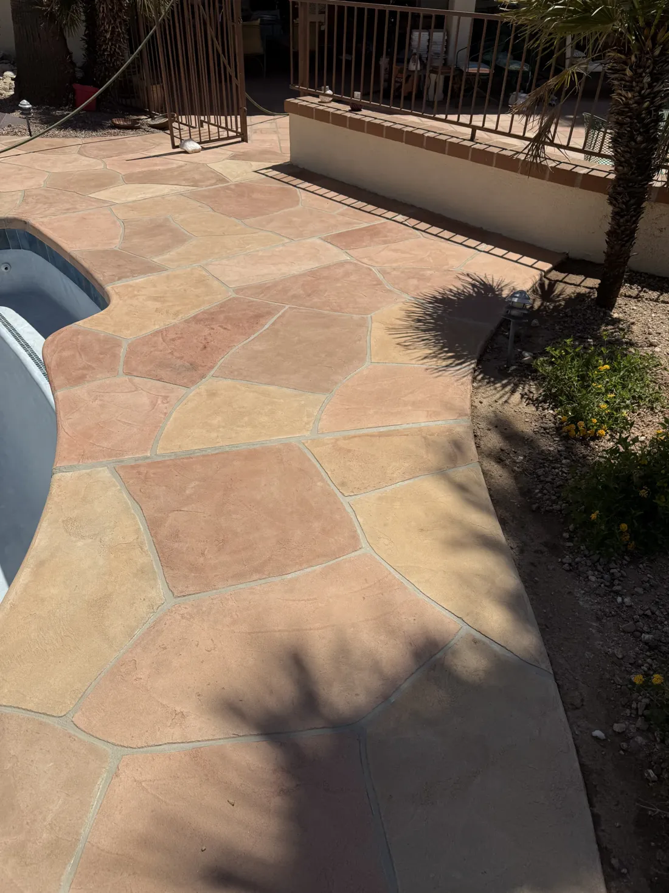
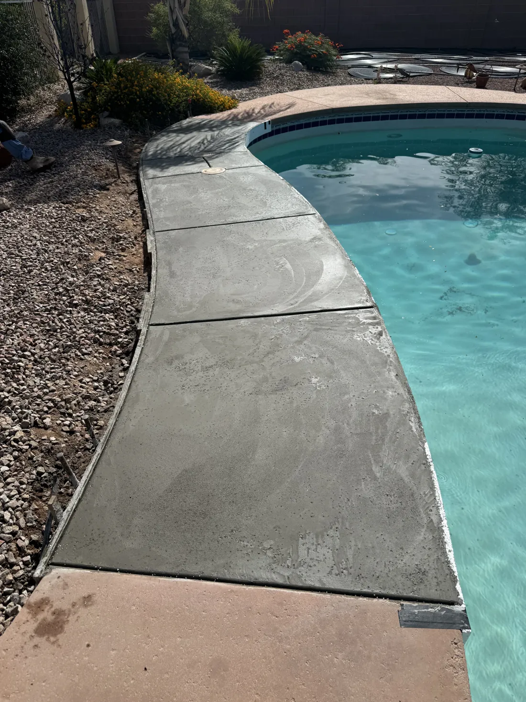

Concrete doesn't do second chances.
John's Concrete & Pool Decking remodels pool decks, repairs pools and pours concrete across Tucson and Pima County. Done right, the first time.
A truck of concrete gives you about ninety minutes.
Then it starts to set. No undo. No second pour.
Skip the prep, add a little water, rush the finish, and you'll see it in the cracks for years.
This is not a weekend project.


The rushed driveway
Water on the base, a hose in the form.
A wet, loose base settles. The slab on top of it follows.
Soupy mix, poured fast.
Extra water makes concrete easy to place and much weaker once it cures.
Then the cracks show up.
No steel, no planned joints, so the slab picks its own places to break.
And then comes the teardown bill.
Breaking out and re-pouring costs more than doing it right once.

Same driveway. Which crew do you want?


The right way
Same job. Done by pros.
- Compacted gravel base, graded to drain
- Rebar on chairs, so steel sits where it belongs
- Mix ordered for the job. No water added on site
- Placed, screeded and floated on schedule
- Joints cut and the slab cured, not left to chance
Poured right. On schedule.
- Licensed, bonded and insured
- ROC #335226
- Free written estimates
- 5.0 stars from 5 reviews
What we pour.
Pool decks, pool repair and concrete. Pick one to see how we do it.
Pool Deck Remodeling
Overlays, crack repair and resurfacing for worn or discolored pool decks, with slip-resistant finishes.
See how we do itSwimming Pool Repair
Replastering, splash pads, lagoon additions, handrails and general pool repairs and upgrades.
See how we do itConcrete Pouring
Driveways, patios, foundations, walkways and slabs for residential and commercial projects.
See how we do itConcrete Stamping
Stamped pool decks, patios, driveways and walkways with custom patterns and finishes.
See how we do itColored Concrete
Recoloring, integral color, acid stain finishes and custom color blends for decks, patios and driveways.
See how we do itFaux Stones
Repair and re-staining for faux stone pool features that have faded, cracked or worn.
See how we do itSail Shade Installation
Pool and patio sail shades with custom layout and sizing, and professional mounting and anchoring.
See how we do itNot sure which one you need?
Our work.
A few recent pours. Ask us for more near you.






How we keep it honest.
Concrete is hard to judge until it's too late to change. So we put the important parts in front of you early.
-
Honest estimates.
You get a clear, honest estimate with no surprises before the work starts.
-
Prep done right.
Surface preparation, materials and scheduling are settled before we start, so the finish has something solid under it.
-
Licensed, bonded and insured.
We carry the license and coverage so you do not carry the risk.
-
Veteran-owned, with a discount.
We offer a discount for military and first responders.
Meet John, owner and founder.
John is the owner and founder of John's Concrete & Pool Decking. He has 32 years of hands-on concrete experience, in pool decking, concrete pouring, repairs and remodeling.
After high school John served in the United States Navy, and that discipline and attention to detail shows in how the company works. John's Concrete & Pool Decking is veteran-owned and operated.
- License
- ROC #335226
- Coverage
- Licensed, bonded and insured
- Owner
- John, U.S. Navy veteran
Where we work.
Serving Tucson and Pima County and the towns around it.
- Tucson
- Oro Valley
- Vail
- Green Valley
- Sierra Vista
- Marana
- South Tucson
- Picture Rocks
- Sahuarita
- Corona de Tucson
- Catalina
- Avra Valley
Not on the list? Call. We serve homeowners throughout Pima County and the surrounding areas.
Call (520) 991-4439What customers say.
Hover a bubble to read it.Tap a bubble to read it.
5.0 average from 5 reviews. Read them on Google
As someone who had never owned or maintained a pool before, John is someone you feel you can trust to do things the right way. He explained things clearly and is personable and easy to communicate with over text.
Took time explaining process. Showed up when said he would be there with a great crew.
We are very happy with the work John and Crew did at out home. They were prompt and on time and did a wonderful job.
They showed up quickly to quote the job, gave me a competitive quote, were very responsive throughout the booking/scheduling process, and completed on the job on the original schedule.
Booking is simple.
-
Call or send the form
Tell us about your pool deck, pool or concrete project.
-
Consultation and estimate
We discuss your goals, inspect the site and give you a clear, honest estimate.
-
Planning and preparation
We plan the project and prepare the area: surface prep, materials and scheduling.
-
Installation and final walkthrough
Skilled installation, then a final inspection and cleanup.
Questions we hear a lot.
Do I need to replace my pool deck?
Often not. If the concrete is sound, an overlay and crack repair can renew it. We look at the deck and tell you what we see.
What areas do you serve?
Tucson, Oro Valley, Vail, Green Valley, Sierra Vista, Marana, South Tucson, Picture Rocks, Sahuarita, Corona de Tucson, Catalina, Avra Valley and the rest of Pima County.
Are you licensed and insured?
Yes. We are licensed, bonded and insured, and our Arizona ROC number is 335226.
Do you offer a discount?
Yes. We offer a discount for military and first responders.
How long until I can use new concrete?
Foot traffic usually comes after a day or two and vehicles wait longer. We give you dates for your job.
How do I get an estimate?
Call (520) 991-4439 or send the form. Estimates are free.
Ready when you are.
Call us, or send the details and we will call you to set up a free estimate.